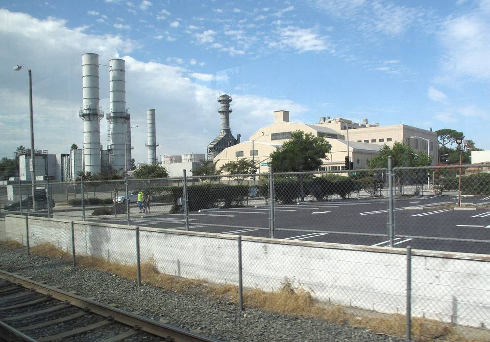

미국 패서디나 시영 전력회사, 태양광 160MW·저장 130MW 6건 협상…시 소유 부지 태양광 공모도 진행

2031년 전기 100% 무탄소 목표…글레나암 발전소 25MW 배터리 11월 착공, 중앙도서관 주차장·로즈볼·컨벤션센터는 따로 공모, 배전망에 붙는 200kW 넘는 지역 사업도 사들여
미국 캘리포니아주 패서디나 시가 소유한 공기업 패서디나 수도전력국(PWP)이 태양광 약 160MW와 배터리 저장 약 130MW 규모의 전력망급 무탄소 에너지 사업 6건을 협상하고 있다. 2031년까지 시 전기를 100% 무탄소로 바꾸겠다는 목표에 따른 것으로, 11월 3일 시 환경자문위원회에 보고 안건으로 오른 10월 진척 보고서에 따르면 6건 가운데 2건은 정식 계약 협상, 2건은 독점 협상 합의 단계에 있다. PWP는 이미 확보했거나 개발 중인 자원을 합치면 연간 기준으로 목표치의 125%, 시간대별 기준으로 95%를 채울 것으로 내다봤지만, 이는 자원 확보 전망일 뿐 지금 모든 전기를 무탄소로 공급한다는 뜻은 아니다. 시 소유 부지에서는 글레나암 발전소 안에 4시간 용량의 25MW 리튬인산철 배터리를 11월 착공해 2027년 6월 가동할 예정이고, 시 부지 태양광 1차 공모는 10월 20일 마감 뒤 응모작을 심사하고 있으며, 컨벤션센터·로즈볼·중앙도서관 주차장은 사업 성격과 일정, 재원이 달라 따로 공모한다. 연방 지원 170만 달러를 받은 중앙도서관에는 태양광·배터리·전기차 급속충전기를 함께 들이고 마이크로그리드·가상발전소 시범지로 삼는 방안이 거론되며, 시 배전망에 직접 붙어 전기를 파는 200kW 넘는 지역 사업은 '클린파워 패서디나 파트너십'이라는 이름으로 10월 30일까지 공모했다. PWP는 비용 효율적인 계약 조건을 찾고 있다며, 계약 체결과 공사에 앞서 시의회 승인을 다시 받겠다고 밝혔다.
시민에너지 관점
미국에는 시나 지역이 소유한 공영 전력회사가 2,000곳 넘게 있고, 패서디나는 그 틀 안에서 발전소 부지와 도서관 주차장, 경기장 같은 공공 자산을 무탄소 전환의 무대로 쓰고 있다. 공기업이 직접 나서면 느리고 비싸진다는 걱정이 있지만, 협상 단계와 전망치를 시민 자문기구에 공개하고 계약마다 시의회 승인을 받는 방식은 오히려 주민이 전환의 속도와 비용을 지켜볼 수 있게 한다. 다만 이번 보고서에는 주민이 발전 설비에 출자하는 길이 보이지 않는데, 공공부지 태양광의 주인 자리에 주민이 함께 앉아야 아낀 요금과 수익이 지역에 더 오래 머문다. 우리 지자체도 공영주차장과 공공건물 지붕을 민간 임대로만 넘기지 말고, 시민 출자와 지역 소규모 사업 구매를 처음부터 계획에 넣어야 한다.
출처: Pasadena Now 2026-11-03 Gab Apo 원문 보기
米パサデナ市営電力、太陽光160MW・蓄電130MWの6事業を交渉中…市有地の太陽光公募も進める
2031年に電力100%カーボンフリーが目標…グレナーム発電所の25MW蓄電池は11月着工、中央図書館駐車場・ローズボウル・コンベンションセンターは別途公募、配電網につながる200kW超の地域事業も購入
米カリフォルニア州パサデナ市が所有する公営企業パサデナ水道電力局（PWP）が、太陽光約160MWと蓄電池約130MW規模の系統規模カーボンフリー事業6件を交渉している。2031年までに市の電力を100%カーボンフリーにする目標に沿ったもので、11月3日に市環境諮問委員会へ報告事項として出された10月の進捗報告書によると、6件のうち2件は正式な契約交渉、2件は独占交渉の合意段階にある。PWPは、すでに確保した資源と開発中の事業を合わせると、年間基準で目標の125%、時間帯別基準で95%を満たすと見込んだが、これは資源確保の見通しであり、現在すべての電力をカーボンフリーで供給しているという意味ではない。市有地では、グレナーム発電所の敷地内に4時間容量の25MWリン酸鉄リチウム蓄電池を11月に着工し、2027年6月の運転開始を予定している。市有地太陽光の第1次公募は10月20日の締め切り後に応募案を審査しており、コンベンションセンター・ローズボウル・中央図書館駐車場は事業の性格や日程、財源が異なるため別途公募する。連邦支援170万ドルを受けた中央図書館には太陽光・蓄電池・電気自動車急速充電器を併せて導入し、マイクログリッドや仮想発電所の実証地とする案も挙がっており、市の配電網に直接つながり電力を売る200kW超の地域事業は「クリーンパワー・パサデナ・パートナーシップ」として10月30日まで公募した。PWPは費用対効果の高い契約条件を探っているとし、契約締結と工事の前に改めて市議会の承認を得ると明らかにした。
市民エネルギーの視点
米国には市や地域が所有する公営電力会社が2,000以上あり、パサデナはその枠組みの中で、発電所の敷地や図書館の駐車場、スタジアムといった公共資産をカーボンフリー転換の舞台にしている。公営企業が直接乗り出すと遅く高くつくという懸念もあるが、交渉段階や見通しの数字を市民の諮問機関に公開し、契約ごとに市議会の承認を得るやり方は、むしろ住民が転換の速さと費用を見守れるようにする。ただ今回の報告書には住民が発電設備に出資する道が見えず、公共用地の太陽光の持ち主の席に住民も座ってこそ、浮いた料金や収益が地域により長くとどまる。韓国の自治体も、公営駐車場や公共建物の屋根を民間への貸し出しだけで手放さず、市民出資と地域の小規模事業の購入を最初から計画に組み込むべきだ。
出典: Pasadena Now 2026-11-03 Gab Apo 原文を読む
美国帕萨迪纳市营电力公司洽谈光伏160MW、储能130MW共6个项目…市有用地光伏招标同步推进
目标2031年电力100%零碳…格伦纳姆电厂25MW储能11月开工，中央图书馆停车场、玫瑰碗和会展中心另行招标，并采购接入配电网的200kW以上本地项目
美国加利福尼亚州帕萨迪纳市所属公营企业帕萨迪纳水电局（PWP）正在洽谈6个电网级零碳能源项目，规模约为光伏160MW、电池储能130MW。这是为实现2031年前全市电力100%零碳的目标，根据11月3日作为报告事项提交市环境咨询委员会的10月进展报告，6个项目中2个已进入正式合同谈判，2个处于独家谈判协议阶段。PWP预计，已拥有或已签约的资源加上在建项目，按年度标准可达到目标的125%，按逐时标准可达到95%，但这只是资源保障的预测，并不意味着目前已全部供应零碳电力。在市有用地方面，格伦纳姆电厂内一座4小时、25MW的磷酸铁锂储能电站计划11月开工、2027年6月投运；市有用地光伏第一轮招标已于10月20日截止，正在评审方案；会展中心、玫瑰碗和中央图书馆停车场因项目性质、进度和资金不同将另行招标。获得170万美元联邦资助的中央图书馆计划同时建设光伏、储能和电动汽车快充设施，并有望成为微电网和虚拟电厂示范点；直接接入市配电网并向PWP售电的200kW以上本地项目，则以"清洁电力帕萨迪纳伙伴计划"名义招标至10月30日。PWP表示正在寻求具有成本效益的合同条件，签约和施工前将再次报请市议会批准。
市民能源视角
美国有2,000多家由城市或地区拥有的公营电力公司，帕萨迪纳正是在这一框架下，把电厂用地、图书馆停车场和体育场等公共资产变成零碳转型的舞台。有人担心公营企业亲自上阵会又慢又贵，但把谈判进度和预测数字公开给市民咨询机构、每份合同都经市议会批准的做法，反而让居民能够监督转型的速度和成本。不过这份报告里看不到居民出资入股发电设施的渠道，只有让居民也坐上公共用地光伏的主人席位，省下的电费和收益才能更长久地留在本地。韩国地方政府也不应只把公共停车场和公共建筑屋顶出租给民间，而应从一开始就把市民出资和采购本地小型项目写进计划。
来源: Pasadena Now 2026-11-03 Gab Apo 查看原文
Pasadena's city-owned utility negotiates six projects totaling 160MW of solar and 130MW of storage, moves ahead with solar on city properties
Goal of 100% carbon-free power by 2031; 25MW Glenarm battery to break ground in November; Central Library parking lot, Rose Bowl and Convention Center to get separate solicitations; utility also buying local projects over 200kW on its distribution grid
Pasadena Water and Power (PWP), the utility owned by the city of Pasadena, California, is negotiating six utility-scale carbon-free energy projects totaling about 160MW of solar and about 130MW of battery storage. The work serves the city's goal of getting 100% of its electricity from carbon-free sources by 2031, and according to an October progress report presented to the city's Environmental Advisory Commission as an information item on Nov. 3, two of the six projects are in formal contract negotiations and two are covered by exclusivity agreements. PWP projects that resources it already owns or has contracted, combined with projects in development, would reach 125% of an annual benchmark and 95% of an hourly benchmark, though these figures describe projected resource coverage, not electricity already delivered entirely from carbon-free sources. On city land, a 25MW, four-hour lithium iron phosphate battery at the Glenarm Power Plant is set to start construction in November and begin operating in June 2027; the first round of proposals for solar on city properties closed on Oct. 20 and is under review, while the Convention Center, Rose Bowl and Central Library parking lot will get separate solicitations because their complexity, schedules and funding differ. The Central Library, which has received $1.7 million in federal assistance, is slated for solar, battery storage and fast EV charging and could serve as a microgrid and virtual power plant demonstration site, and a separate Clean Power Pasadena Partnership solicitation, open until Oct. 30, sought local projects over 200kW that connect directly to the city's distribution grid and sell power to the utility. PWP said it is seeking cost-effective contract terms and will return to the City Council for approval before awarding contracts or starting construction.
Citizen Energy View
The United States has more than 2,000 publicly owned electric utilities, and Pasadena is using that model to turn public assets such as a power plant site, a library parking lot and a stadium into the stage for its carbon-free transition. Some worry that a public utility doing the work itself will be slow and costly, but publishing negotiation stages and projections to a citizen advisory body and putting each contract before the City Council actually lets residents keep watch over the pace and cost of the transition. What the report does not show is any way for residents to invest in the generating assets, and only when residents share ownership of solar on public land will the savings and returns stay in the community longer. Korean local governments, too, should not simply lease public parking lots and building roofs to private firms, but should build citizen investment and purchases from small local projects into their plans from the start.
Source: Pasadena Now 2026-11-03 Gab Apo Read the original